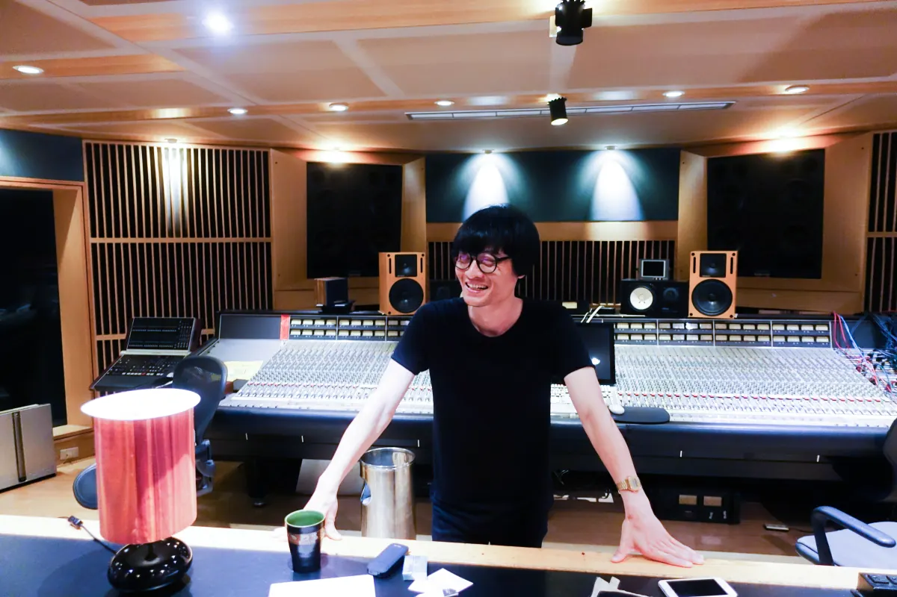

當我們問到大麻老師有沒有什麼建議要給想要進入音樂產業的獨立樂團時，他直白地說：「我覺得玩樂團的人都不會問建議，獨立音樂的小孩是不太聽前輩、老掉牙的。」玩獨立樂團那麼多年的大麻，其實也很明白獨立音樂人有個性，不易被資歷或太多的框架給受限的精髓。
聊到近年唱片市場的改變，大麻老師在專訪中提供了一些他的想法。「錄音室的狀況跟唱片市場有關聯。唱片賣得好錄音室就會貴。2007我覺得是一個轉折。2000年時一定還有破百萬的專輯，2007可能十萬左右就是年度冠軍。現在一萬就很厲害了。因為錄音成本變便宜了，（獨立）樂團反而進得來。以前只有幾家大型專業錄音室，唱片市場搶著要錄音哪輪得到我們。」 大麻老師認為，唱片市場的改變，對獨立樂團其實也是另一種機會。現在是LIVE市場比較好。錄完專輯後再受邀去LIVE或者包場演出，相對對樂團是比較自在的。和以前觀念不一樣，不能直接算唱片賣多少張。
然而錄製專輯（或單曲），是獨立樂團必經的一個過程，他認為錄音製作這門學問只有透過實作才能慢慢累積自己製作實力的根本。當過樂手、錄音Engineer及製作人的大麻老師，不吝分享了一些技術面的建議：「現在樂團越來越流行自己做一個小型工作室，可是工作室的規模要想清楚。練團為主也不錯，但只要有兩軌比較堪用就好了，如果花太多錢買器材在自己的工作室錄鼓，覺得會有點可惜。畢竟錄鼓設備需求較多，且鼓組的空間感及音色對整首歌的風格影響非常顯著。對樂手來說，最複雜的錄音就是鼓，一次要錄大鼓小鼓等很多聲音。但是人不太可能做到跟機器一樣完全準，如果後續都是要微調，那不如在技術之外還是要多想想自我風格的建立。對平常的練習來說，建議要錄分軌用軟體檢查才知道每個鼓點有沒有打準。」
近期大麻老師也製作了一些新的獨立樂團專輯，在專輯中大麻老師扮演製作人和Engineer的雙重身份，這樣的身份又讓他累積了更多錄音的經驗。「當我擔任製作人的時候，我會提出想法，但是不會幫他們做決定。現在樂手都很厲害，鼓手變厲害的也很多。可是錄完後他們常常會希望能夠更精準一點。如果鼓手可以自己學使用pro tools，自己剪是最理想的。樂手只要兩軌，但鼓手可能有十幾隻麥克風，要怎麼避免一些聲音或想要什麼樣的感覺，鼓手自己比較知道。所以大錄音室錄鼓是樂團最看重的地方。鼓勵樂手們不要怕到新的環境錄音，有 console 可以十幾個分軌都有 EQ、Compressor 可用非常值得。我通常都會建議樂團就算只要去錄音室錄鼓也好。我們當年聽到要30萬就可以進錄音室已經覺得不可思議，就是因為 pro tools 的出現。現在唱片市場沒有過去蓬勃，但因為錄音成本便宜了，樂團來錄的機會反而增加。」
以下整理出大麻老師分享的幾個觀點，希望對獨立樂團的新朋友們也有幫助：
1. 唱片市場在改變，不要怕去新的環境錄音，也許可以為作品帶來更專業的品質
2. 建議至少鼓的部分可以去各大錄音室錄製，找到自己喜歡的聲音、場地。
3. 保留獨立樂團的風格，但持續透過練習與實際操作累積製作經驗，繼續加油！
小編後記(人物側寫)：
這次的訪談是在強力錄音室的徵房進行，在採訪前完全沒有看過大麻老師本人，但是從名字聽起來就覺得應該是身上有刺青，講話兇兇的老師才對(大麻老師對不起XD)。正在想像之際，頂著一頭烏黑秀髮的老師登場了，披頭四風格的復古文青髮型，卻是點起最新款的電子菸；談吐彬彬有禮，卻是講著自己的非典型人生，這略帶《不合時宜》的違合感，原來其實這就是老師的人格特質與人生觀，或許，這也就是老師奠定今日音樂地位的原因之一。

｜再看一次上集｜